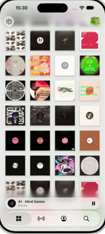
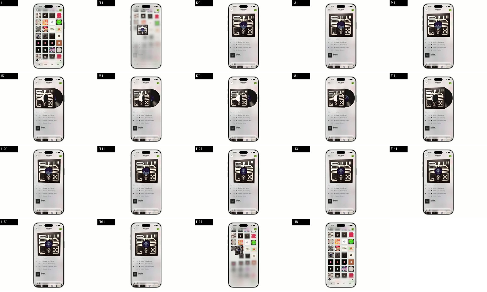
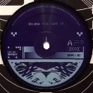
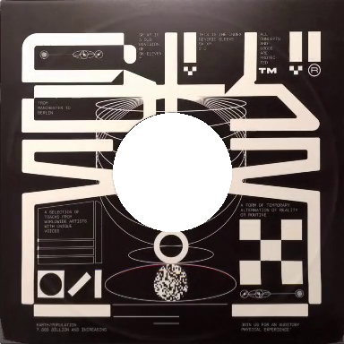
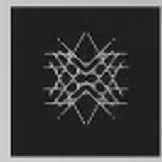

| 阶段 | resp | damp | 过冲 |
|---|





TabView(selection: $tab) {
Tab("资料库", systemImage: "square.grid.2x2",
value: .library) { LibraryView() }
Tab("电台", systemImage: "dot.radiowaves…",
value: .radio) { … }
Tab("我的", systemImage: "person.crop.circle",
value: .profile) { … }
Tab("搜索", systemImage: "magnifyingglass",
value: .search) { … }
}
.tabViewStyle(.tabBarOnly) // iOS 18
.toolbarMinimizationBehavior( // iOS 27
.onScrollDown, for: .tabBar)
ScrollView {
LazyVGrid(…) { … }
}
.scrollEdgeEffectStyle(.soft, for: .bottom) // iOS 26
.safeAreaBar(edge: .bottom) { // iOS 26
MiniPlayer() // 系统自动把边缘模糊延伸到它
}
// UIKit 同一套能力
scrollView.bottomEdgeEffect.style = .soft
| TabView / Tab / Tab(role:) | 18.0 |
| TabRole.search | 18.0 |
| TabRole.prominent | 27.0 |
| .tabViewStyle(.tabBarOnly) | 18.0 |
| .tabBarMinimizeBehavior(_:) | 26.0 |
| .toolbarMinimizationBehavior | 27.0 |
| .scrollEdgeEffectStyle(_:for:) | 26.0 |
| .scrollEdgeEffectHidden(_:for:) | 26.0 |
| .safeAreaBar(edge:…) | 26.0 |
| ScrollEdgeEffectStyle | 26.0 |
| .buttonStyle(.glass) | 26.0 |
| .buttonBorderShape(.circle) | 15.0 |
Button { } label: {
Image(systemName: "cube")
.frame(width: 44, height: 44)
}
.buttonStyle(.glass) // iOS 26 · 系统玻璃
.buttonBorderShape(.circle) // 让系统把玻璃底裁成正圆